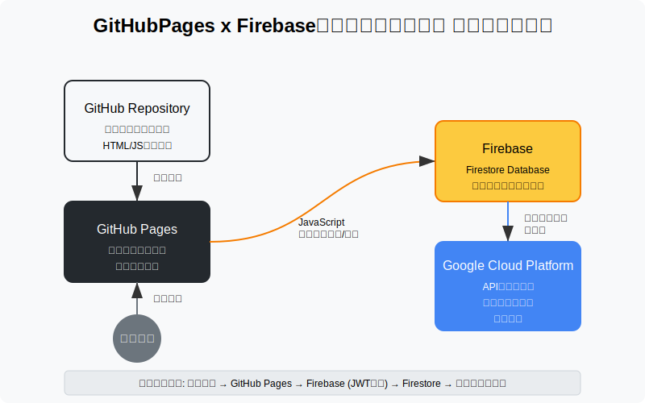
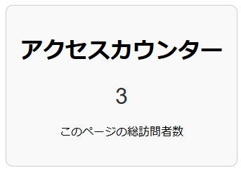

静的ウェブサイトでアクセスカウンターを実装したいと思ったことはありませんか？従来はサーバーサイドの処理が必要でしたが、Firebaseを活用すればGitHub Pagesのような完全に静的なサイトでも簡単にアクセスカウンターを実装できます。本記事ではその実装方法を詳しく解説します。

このアーキテクチャの最大の特徴は、サーバーサイドの実装が一切不要なことです。すべての処理はクライアントサイドのJavaScriptとFirebaseによって行われます。
my-access-counter）github-pages-counter）この時点で表示されるFirebase設定情報（apiKey, authDomain, projectId等）をメモしておきましょう。 まとめてコピペしておくと便利です。
次にカウンターデータを保存するFirestore Databaseを設定します。
asia-northeast1（東京））Firebaseのセキュリティは非常に重要です。適切なルールを設定して不正なアクセスやデータ操作を防ぎましょう。
Firestoreのセキュリティルールは以下のように設定します。
rules_version = '2';
service cloud.firestore {
match /databases/{database}/documents {
match /counters/visitors {
allow read: if true;
allow update: if request.resource.data.keys().hasOnly(["count"]) &&
resource.data.count is number &&
request.resource.data.count is number &&
request.resource.data.count == resource.data.count + 1;
allow create: if request.resource.data.keys().hasOnly(["count"]) &&
request.resource.data.count is number &&
request.resource.data.count == 1;
}
}
}
Firebase Consoleの「Firestore Database」→「ルール」タブからこのルールを設定し、「公開」をクリックします。
Firebase APIキーはHTMLに埋め込まれるため、誰でも見ることができます。そのため、不正使用を防ぐためにAPIキーの使用制限を設定します。
https://username.github.io/*）を追加この設定により、指定したドメインからのリクエストのみAPIキーが使用可能になります。
HTMLとJavaScriptを実装します。 コード量は少なめですのでHTML内に記述しても良いかなと思います。お好みでどうぞ。
<!DOCTYPE html>
<html lang="ja">
<head>
<meta charset="UTF-8">
<meta name="viewport" content="width=device-width, initial-scale=1.0">
<title>アクセスカウンター</title>
<style>
.counter {
font-family: monospace;
font-size: 24px;
background-color: #f5f5f5;
padding: 8px 16px;
border-radius: 4px;
display: inline-block;
}
</style>
</head>
<body>
<div class="container">
<h1>アクセスカウンター</h1>
<div id="counter">読み込み中...</div>
<p>このページの総訪問者数</p>
</div>
<!-- Firebase SDK -->
<script src="https://www.gstatic.com/firebasejs/9.22.0/firebase-app-compat.js"></script>
<script src="https://www.gstatic.com/firebasejs/9.22.0/firebase-firestore-compat.js"></script>
<!-- アクセスカウンタースクリプト -->
<script src="counter.js"></script>
</body>
</html>
// Firebase設定
const firebaseConfig = {
apiKey: "YOUR_API_KEY",
authDomain: "YOUR_PROJECT_ID.firebaseapp.com",
projectId: "YOUR_PROJECT_ID",
storageBucket: "YOUR_PROJECT_ID.appspot.com",
messagingSenderId: "YOUR_MESSAGING_SENDER_ID",
appId: "YOUR_APP_ID"
};
// Firebase初期化
firebase.initializeApp(firebaseConfig);
const db = firebase.firestore();
const counterRef = db.collection('counters').doc('visitors');
// DOM要素の参照
const counterElement = document.getElementById('visitor-count');
// 初回訪問かどうかのチェック（セッションストレージを使用）
const sessionKey = 'visited';
const hasVisited = sessionStorage.getItem(sessionKey);
// カウンター処理
async function handleCounter() {
try {
// カウンターを表示
const doc = await counterRef.get();
if (doc.exists) {
counterElement.textContent = doc.data().count.toLocaleString();
} else {
// ドキュメントが存在しない場合は作成
await counterRef.set({ count: 1 });
counterElement.textContent = '1';
}
// 初回訪問の場合はカウンターを増加
if (!hasVisited) {
// トランザクションを使用して安全に更新
await db.runTransaction(async (transaction) => {
const docRef = await transaction.get(counterRef);
if (!docRef.exists) {
transaction.set(counterRef, { count: 1 });
} else {
const newCount = docRef.data().count + 1;
transaction.update(counterRef, { count: newCount });
}
});
// 訪問済みとしてマーク
sessionStorage.setItem(sessionKey, 'true');
// 更新後のカウントを再取得して表示
const updatedDoc = await counterRef.get();
counterElement.textContent = updatedDoc.data().count.toLocaleString();
}
} catch (error) {
console.error('カウンター処理エラー:', error);
counterElement.textContent = 'Error';
}
}
// カウンター処理を実行
handleCounter();
上記のJavaScriptコードでは以下の処理を行っています。
必ずfirebaseConfigの値は、Firebase Consoleで取得した実際の値に置き換えてください。
実装したファイルをGitHubリポジトリにプッシュして、GitHub Pagesでデプロイします。
access-counter-demo）しばらく待つと、GitHub Pagesのサイトが有効になります（例：https://username.github.io/access-counter-demo/）
サイトにアクセスして、カウンターが表示され、更新されることを確認します。異なるブラウザやデバイスからアクセスして、カウンターが増加することを確認しましょう。

Firebase Firestoreを使用することで、サーバーサイドの実装なしに、完全に静的なGitHub Pagesサイトにアクセスカウンター機能を簡単に追加できます。
ただし、高トラフィックサイトの場合はFirebaseの無料枠を超える可能性があるため、料金プランを確認しておくことをお勧めします。
適切なセキュリティルールの設定と、API制限の設定を忘れないようにしましょう。これらの対策により、API情報が公開されていても、悪用される可能性を最小限に抑えることができます。
なお、本実装ではセッションストレージを使用して重複カウントを防止していますが、これはブラウザのセッションごとに計測される点に注意してください。つまり、ユーザーがブラウザを閉じて再度開くと、新たな訪問としてカウントされます。より厳密なユーザー識別が必要な場合は、LocalStorageやCookieを使用した実装に変更することも検討しましょう。
以上の手順に従えば、誰でも簡単に自分のウェブサイトにアクセスカウンターを実装できます。ぜひトライしてみてください！
IT業界に、ITエンジニアに貢献する企業
ONE WEDGEはServerlessシステム開発を中核技術としてWeb系システム開発、AWS/GCPを利用した業務システム・サービス開発、PWAを用いたモバイル開発、Alexaスキル開発など、元気と技術力を武器にお客様に真摯に向き合う価値創造企業です。
ONE WEDGE株式会社